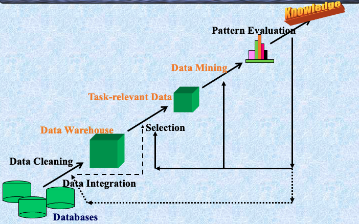

What are data? What is knowledge?
我们可以轻松地获取大量数据，而这些数据对我们来说毫无意义。那么我们真正需要的是什么？knowledge 是从 data 中提取出的有意义的信息。knowledge 就是对你有用的东西。
- 数据仓储和在线分析处理
- 从大型数据库中提取有趣的知识（规则、规律、模式、约束）
What Is Data Mining?
数据挖掘（ Knowledge discovery(mining) in databases ，KDD）：从大型数据库中提取有趣（非平凡、隐含、先前未知且潜在有用）的信息或模式。
Alternative names and their “inside stories”: Knowledge discovery(mining) in databases (KDD), knowledge extraction, data/pattern analysis, data archeology, data dredging, information harvesting, business intelligence, etc.
Why Data Mining?
潜在应用
数据库分析和决策支持：
- 市场分析与管理：目标营销，客户关系管理，市场篮子分析，交叉销售，市场细分
- 风险分析与管理：预测，客户保留，改进承保，质量控制，竞争分析
- 诈骗检测与管理
其他应用
- 文本挖掘（新闻组，电子邮件，文档）和Web分析
- 智能查询回答
数据挖掘：知识发现过程的核心

Steps of a KDD Process
- 学习应用领域：相关的先前知识和应用的目标
- 创建目标数据集：数据选择
- 数据清理和预处理：（可能占60%的工作量！）
- 数据减少和转换：找到有用的特征，降低维度/变量，不变表示
- 选择数据挖掘功能：摘要，分类，回归，关联，聚类
- 选择挖掘算法
- 数据挖掘：寻找感兴趣的模式
- 模式评估和知识呈现：可视化，转换，去除冗余模式等
- 利用发现的知识

Data Mining: On What Kind of Data?
- 关系数据库
- 数据仓库
- 事务性数据库
- 高级数据库和信息库
- 面向对象和面向对象关系数据库
- 空间数据库
- 时间序列数据和临时数据
- 文本数据库和多媒体数据库
- 异构和遗留数据库
- 万维网
Data Mining Functionalities
- 概念描述：表征和区分
- 推广、总结和对比数据特征，例如，干燥区域与湿润区域
- 关联（相关性和因果关系）
- 多维与单维关联
- age(X, “20..29”) ^ income(X, “20..29K”) à buys(X, “PC”) [support = 2%, confidence = 60%]
- contains(T, “computer”) à contains(x, “software”) [1%, 75%]
- 分类和预测
- 查找描述和区分未来预测的类别或概念的模型（函数）。例如，根据气候对国家进行分类，或根据油耗对汽车进行分类
- 展示：决策树、分类规则、神经网络
- 预测：预测一些未知或缺失的数值
- 聚类分析
- 类别标签未知：将数据分组形成新类别，例如，聚类房屋以找到分布模式
- 基于原则的聚类：最大化类内相似性，最小化类间相似性
- 离群值分析
- 离群值：不符合数据一般行为的数据对象
- 它可以被视为噪声或异常，但在欺诈检测、罕见事件分析中非常有用
- 趋势和演变分析
- 趋势和偏差：回归分析
- 时序模式挖掘，周期性分析
- 基于相似性的分析
- 其他面向模式或统计分析
Are All the “Discovered” Patterns Interesting?
- 数据挖掘系统/查询可能生成数千个模式，其中并非所有都有趣。建议的方法：以人为中心，基于查询，重点挖掘
- Interestingness measures: 模式易于被人类理解、在新数据或测试数据上具有一定程度的准确性、潜在有用、新颖或验证用户希望确认的某些假设时，模式是有趣的
- 客观与主观的有趣性度量:
- 客观：基于模式的统计和结构，例如，支持度、置信度等
- 主观：基于用户对数据的信仰，例如，出乎意料性、新颖性、可操作性等。
Can We Find All and Only Interesting Patterns?
- 找到所有有趣的模式：完整性。数据挖掘系统是否能够找到所有有趣的模式？
- 仅寻找有趣的模式：优化。数据挖掘系统是否能够找到仅有趣的模式？
- Approaches
- 首先生成所有模式，然后过滤掉不有趣的模式
- 仅生成有趣的模式——挖掘查询优化

Data Mining: Classification Schemes
- 一般功能
- 描述性数据挖掘
- 预测性数据挖掘
- 不同视图，不同分类
- 要挖掘的数据库种类
- 要发现的知识种类
- 使用的技术种类
数据挖掘分类的多维视图
- 要挖掘的数据库
- 关系型、事务型、面向对象、面向对象关系、主动、空间、时序、文本、多媒体、异构、遗留、万维网等。
- 要挖掘的知识
- 表征、区分、关联、分类、聚类、趋势、偏差、离群值分析等。
- 多个/集成功能和多层次挖掘
- 使用的技术
- 面向数据库、数据仓库（OLAP）、机器学习、统计学、可视化、神经网络等。
- 适应的应用
- 零售、电信、银行、欺诈分析、DNA挖掘、股票市场分析、Web挖掘、Web日志分析等。
OLAP挖掘：数据挖掘和数据仓库的集成
- 数据挖掘系统、DBMS、数据仓库系统的耦合
- 无耦合，松耦合，半紧耦合，紧耦合
- 在线分析挖掘数据
- 挖掘和OLAP技术的集成
- 交互挖掘多层次知识
- 通过钻取/滚动、切片/切块等在不同抽象层次上挖掘知识的必要性
- 多个挖掘功能的集成
- 表征分类、首先聚类，然后关联
OLAM架构
Major Issues in Data Mining
- 挖掘方法和用户交互
- 挖掘数据库中不同类型的知识
- 在多个抽象层次上交互挖掘知识
- 合并背景知识
- 数据挖掘查询语言和临时数据挖掘
- 表达和可视化数据挖掘结果
- 处理噪声和不完整数据
- 模式评估：有趣性问题
- 性能和可伸缩性
- 数据挖掘算法的效率和可伸缩性
- 并行、分布和增量挖掘方法
- 与数据类型多样性相关的问题
- 处理关系和复杂类型的数据
- 从异构数据库和全球信息系统（WWW）挖掘信息
- 与应用和社会影响相关的问题
- 应用发现的知识
- 领域特定的数据挖掘工具
- 智能查询回答
- 过程控制和决策制定
- 将发现的知识与现有知识整合：知识融合问题
- 保护数据安全、完整性和隐私
- 应用发现的知识